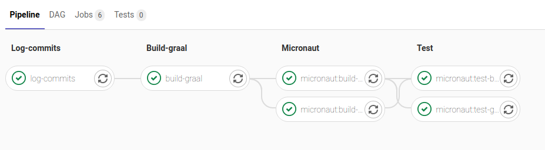
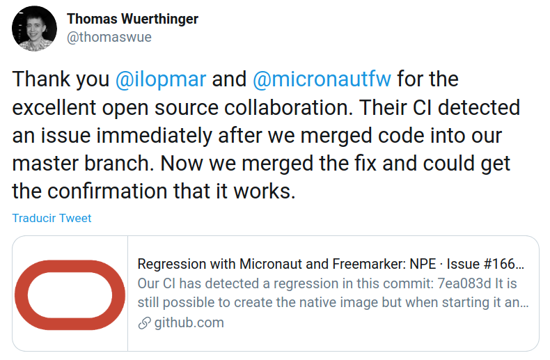

Micronaut® Blog
Micronaut and GraalVM: An Integration Story
October 12, 2020
Tags: #micronaut #graalvm #test #gitlabci
Micronaut and GraalVM go way back. Ever since our 1.0 release back in October of 2018, Micronaut has proudly included out-of-the-box support for GraalVM and was one of the first large Java frameworks to do so.
I still remember the early days when our integration would work exceptionally for GraalVM 1.0-RC6, but then something would change in 1.0-RC7 and things would break. A while later, 1.0-RC8 would be released and everything would work great again ... until it didn't.
We needed to make sure we were able to test our integration before the GraalVM team released a new version. By testing early, any issues and regressions we discovered could be reported and fixed before the next release.
It was January 2019 (fewer than three months after we released Micronaut 1.0), and we were still using Travis CI for testing Micronaut. Travis had a lot of constraints that didn't fit well with GraalVM. Specifically, a really low memory limit, prohibitive options for creating complex CI workflows, and no support for creating artifacts for use in later CI pipeline jobs. We needed another way.
Introducing Gitlab CI
Gitlab CI is part of Gitlab (although you don't need to use GitLab proper to use the CI). GitLab CI was an easy choice for me because I used it a lot in a previous job, and I really love working with it.
The idea was to create a CI pipeline with the following objectives in mind:
- It should execute periodically instead of at each commit.
- It should only run if there are changes in either Micronaut or GraalVM.
- It should compile GraalVM from
masterbranch, so we could detect any issue or regression as soon as possible before the next GraalVM release. - It should be able to test different Micronaut applications easily.
- It should support different CI stages and jobs with some dependencies between them.
After experimenting with a few different approaches in a new repository, we were able to get a passing build using this CI pipeline:

It has four stages that we still use:
- Log-commits: Saves the commits that triggered the build for both Micronaut and GraalVM. If the build fails, we can check those commits and see why.
- Build-graal: Clones the GraalVM repository and builds it from
masterbranch. The GraalVM JDK distribution generated in this stage is saved as an artifact for use in the next stage. - Micronaut: Clones various Micronaut test applications and builds a native image using the GraalVM distribution created in the previous stage. The native images are saved again as artifacts, so they can be used for the tests.
- Test: Starts the native images generated in the previous stage and runs some tests to make sure everything works as expected.
These tests are
curlrequests to different endpoints and we check the response.
For keeping track of new commits in Micronaut and GraalVM and running the scheduled jobs, we have another companion project in which we store the latest commit for both projects and decide if we should trigger the CI in the main repository.
Test Applications
Since our original pipeline, a lot of things have changed. Our two initial applications have become 26 test applications with 39 different jobs. This is because some of them test the same things but with different options. For example in the Micronaut JDBC test application, there are branches for all the databases supported: H2, Postgres, Oracle, MariaDB, SQL Server, and MySQL.
Also, the number of jobs has been multiplied by four because we now test GraalVM for JDK 8 and JDK 11, and we also test against two Micronaut versions (currently 2.0.x and 2.1.x). This is how the CI pipeline looks today:

Very long and beautiful list, right? ;-)
The list includes test applications for RabbitMQ, gRPC, Service Discovery with Consul and Eureka, Security, Micronaut Data, Flyway, Elasticsearch, Redis, and many more. We are increasing the list with new applications, and we are committed to support more and more things in every release.
Own Runners on AWS
Some months ago, we hit a limit on the Gitlab CI shared runners. A few jobs were failing when building the native images because of an out-of-memory exception. Basically, they didn't have enough memory to build the native image, and the process failed.
Gitlab CI provides a way to use your own runners, so we set up an auto-scaling runner infrastructure on AWS for the jobs that required additional memory.
In order to choose the right instance type, I did some tests without limiting the number of instances launched during the auto-scale.
| Instance | Specs | Time to run pipeline | CPU usage |
|---|---|---|---|
| c5.xlarge | 4 CPUs - 8 GB RAM | 17 mins | 60-70% |
| c5.2xlarge | 8 CPUs - 16 GB RAM | 13 mins | 30-40% |
| c5.24xlarge | 96 CPUs - 192 GB RAM | 43 mins | 10% |
You may wonder why using a huge instance like c5.24xlarge takes almost three times longer to run the CI pipeline than
the others. The answer is you can only allocate up to 512 CPUs on AWS without asking AWS support for an increase, so choosing the biggest instance allowed us to run only five of them in parallel.
With those numbers, it felt right to choose c5.xlarge because the time difference with c5.2xlarge was minimal, and
the former maximized the CPU usage and costs by half of the latter.

Eventually, I moved some other jobs to run on our AWS runners because of the native image build time. The AWS runners are so fast compared to the shared runners that they can build almost three native images in the time the shared runners build one. With the current mix of shared and dedicated runners, the build takes around 35-40 minutes to finish.
Here are some of the time improvements we witnessed:
| App | Shared runners | Own runners |
|---|---|---|
| GraalVM | 23 min | 7 min 29 sec |
| MS SQL | 14 min 18 sec | 5 min 33 sec |
| gRPC (server + client) | 35 min | 7 min 3 sec |
Configuring a job to run on our own runner is pretty simple with Gitlab. It's a matter of tagging it with aws, memory, or speed. I use tag combinations like aws + memory, or aws + speed as a way to document why
a specific job is running on our own runners.

Test dev-release Versions
Some time ago the GraalVM team started to publish dev-releases every few days for the community to test against, so you wouldn't have to compile everything from source yourself. They asked us if we could verify that Micronaut was working with the latest dev-release just a few days before releasing a final GraalVM version. As we have a very granular and flexible CI pipeline, it was easy for us to add a new branch and automate the tests for those dev-releases. Now, we have a scheduled job that is executed every two or three days that automatically downloads the latest dev-release available and runs all the tests with it. For the curious, everything remains the same, and the only change is in the GraalVM build script that now downloads the latest dev-release version.
Was It Worth the Effort?
What started as a small thing has evolved a lot in the past 21 months. Time has proved that it was really worth the effort we put into this. For example, just a few days ago, the gRPC test application failed, and I was able to track down the commit that broke the build and report an issue to the GraalVM team. Then, just a few days later, they fixed the issue and our build is back to green. :-)
Speaking about reporting issues, we have been working together with GraalVM to improve the GraalVM support in Micronaut, and I've reported a lot of issues to make GraalVM better.

We, the Micronaut team at Object Computing, will continue to improve our GraalVM integration in every Micronaut release. We will also do everything we can to make integrating your Micronaut applications with GraalVM as easy as possible.
Our support has improved a lot in Micronaut 2.1 with the new Micronaut Gradle plugin. Take a look at this video in which Graeme Rocher does a demo of it.
For Micronaut 2.2, we also plan to release an improved version of our current Micronaut Maven plugin, which will include these new features as well.